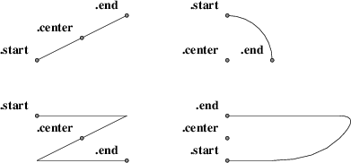
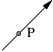
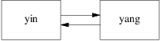
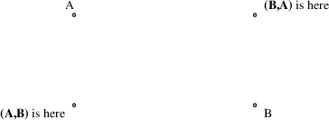
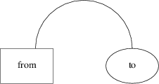
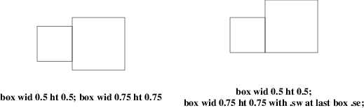
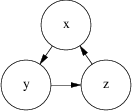

The location of points can be described in many different ways. All these forms are interchangeable as for as the pic language syntax is concerned; where you can use one, any of the others that would make semantic sense are allowed.
The special label Here always refers to the current position.
The simplest is absolute coordinates in inches; pic uses a Cartesian system with (0,0) at the lower left corner of the virtual drawing surface for each picture (that is, X increases to the right and Y increases upwards). An absolute location may always be written in the conventional form as two comma-separated numbers surrounded by parentheses (and this is recommended for clarity). In contexts where it creates no ambiguity, the pair of X and Y coordinates suffices without parentheses.
It is a good idea to avoid absolute coordinates, however. They tend to make picture descriptions difficult to understand and modify. Instead, there are quite a number of ways to specify locations relative to pic objects and previous locations.
Another possibility of surprise is the fact that pic crops the picture to the smallest bounding box before writing it out. For example, if you have a picture consisting of a small box with its lower left corner at (2,2) and another small box with its upper right corner at (5,5), the width and height of the image are both 3 units and not 5. To get the origin at (0,0) included, simply add an invisible object to the picture, positioning the object’s left corner at (0,0).
The symbol Here always refers to the position of the last object drawn or the destination of the last move.
Alone and unqualified, a last circle or any other way of specifying a closed-object or arc location refers as a position to the geometric center of the object. Unqualified, the name of a line or spline object refers to the position of the object start.
Also, pic objects have quite a few named locations associated with them. One of these is the object center, which can be indicated (redundantly) with the suffix .center (or just .c). Thus, last circle .center is equivalent to last circle.
Every closed object (box, circle, ellipse, or block composite) also has eight compass points associated with it;

Figure 10-1: Compass points
these are the locations where eight compass rays from the geometric center would intersect the figure. So when we say last circle .s we are referring to the south compass point of the last circle drawn. The explanation of Figure 7.3’s program is now complete.
(In case you dislike compass points, the names .top, .bottom, .left and .right are synonyms for .n, .s, .e, and .w respectively; they can even be abbreviated to .t, .b, .l and .r).
The names center, top, bottom, left, right, north, south, east, and west can also be used (without the leading dot) in a prefix form marked by of; thus, center of last circle and top of 2nd last ellipse are both valid object references. Finally, the names left and right can be prefixed with upper and lower which both have the obvious meaning.
Arc objects also have compass points; they are the compass points of the implied circle.
Non-closed objects (line, arrow, or spline) have compass points too, but the locations of them are completely arbitrary. In particular, different pic implementations return different locations.
Every open object (line, arrow, arc, or spline) has three named points: .start, .center (or .c), and .end. They can also be used without leading dots in the of prefix form. The center of an arc is the center of its circle, but the center of a line, path, or spline is halfway between its endpoints.

Figure 10-2: Special points on open objects
Once you have two positions to work with, there are several ways to combine them to specify new positions.
Positions may be added or subtracted to yield a new position (to be more precise, you can only add a position and an expression pair; the latter must be on the right side of the addition or subtraction sign). The result is the conventional vector sum or difference of coordinates. For example, last box .ne + (0.1, 0) is a valid position. This example illustrates a common use, to define a position slightly offset from a named one (say, for captioning purposes).
A position may be interpolated between any two positions. The syntax is ‘fraction of the way between position1 and position2’. For example, you can say 1/3 of the way between here and last ellipse .ne. The fraction may be in numerator/denominator form or may be an ordinary number (values are not restricted to [0,1]). As an alternative to this verbose syntax, you can say ‘fraction <position1 , position2>’; thus, the example could also be written as 1/3 <here, last ellipse>.

Figure 10-3: P: 1/3 of the way between last arrow .start and last arrow .end
This facility can be used, for example, to draw double connections.

Figure 10-4: Doubled arrows
You can get Figure 10-4 from the following program:
.PS A: box "yin"; move; B: box "yang"; arrow right at 1/4 <A.e,A.ne>; arrow left at 1/4 <B.w,B.sw>; .PE
Note the use of the short form for interpolating points.
Given two positions p and q, the position (p, q) has the X coordinate of p and the Y coordinate of q. This can be helpful in placing an object at one of the corners of the virtual box defined by two other objects.

Figure 10-5: Using (x, y) composition
There are four ways to use locations; at, from, to, and with. All four are object modifiers; that is, you use them as suffixes to a drawing command.
The at modifier says to draw a closed object or arc with its center at the following location, or to draw a line/spline/arrow starting at the following location.
The to modifier can be used alone to specify a move destination. The from modifier can be used alone in the same way as at.
The from and to modifiers can be used with a line or arc command to specify start and end points of the object. In conjunction with named locations, this offers a very flexible mechanism for connecting objects. For example, the following program
.PS
box "from"
move 0.75;
ellipse "to"
arc cw from 1/3 of the way \
between last box .n and last box .ne to last ellipse .n;
.PE
yields:

Figure 10-6: A tricky connection specified with English-like syntax
The with modifier allows you to identify a named attachment point of an object (or a position within the object) with another point. This is very useful for connecting objects in a natural way. For an example, consider these two programs:

Figure 10-7: Using the with modifier for attachments
When drawing lines between circles that don’t intersect them at a compass point, it is useful to be able to shorten a line by the radius of the circle at either or both ends. Consider the following program:
.PS circle "x" circle "y" at 1st circle - (0.4, 0.6) circle "z" at 1st circle + (0.4, -0.6) arrow from 1st circle to 2nd circle chop arrow from 2nd circle to 3rd circle chop arrow from 3rd circle to 1st circle chop .PE
It yields the following:

Figure 10-8: The chop modifier
Notice that the chop attribute moves arrowheads rather than stepping on them. By default, the chop modifier shortens both ends of the line by circlerad. By suffixing it with a number you can change the amount of chopping.
If you say line ... chop r1 chop r2 with r1 and r2 both numbers, you can vary the amount of chopping at both ends. You can use this in combination with trigonometric functions to write code that deals with more complex intersections.